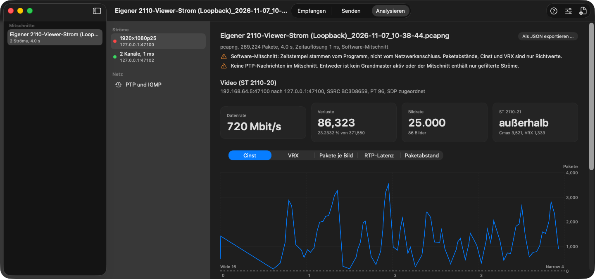
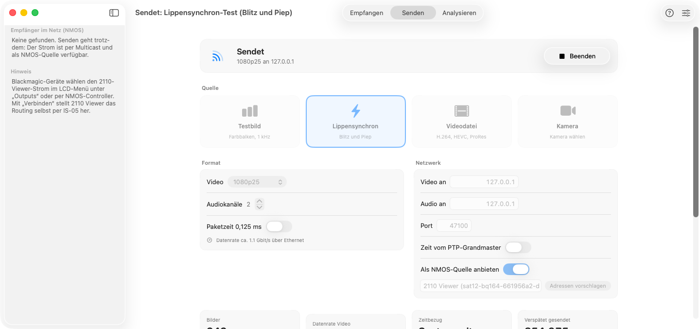

ST 2110 am Mac empfangen, senden und analysieren
2110 Viewer zeigt Bild und Ton von Blackmagic-2110-Geräten direkt über Ethernet, schickt eigene Signale ins Netz und prüft Paketmitschnitte. Entstanden für die Lehre.
macOS 14 oder neuer, Apple Silicon · Liquid Glass ab macOS 26 · MIT-Lizenz
ST 2110 teilt ein SDI-Signal in Essenzen. 2110 Viewer empfängt, sendet und prüft sie.
Drei Arbeitsweisen
ST 2110 zerlegt ein SDI-Signal in einzelne Essenzen – Video, Audio, Daten – mit je eigener Multicast-Adresse. 2110 Viewer arbeitet mit allen dreien.
Empfangen
Unkomprimiertes ST 2110-20 (YCbCr 4:2:2, 10 Bit) und ST 2110-30-Audio mit bis zu 64 Kanälen.
- Quellen per NMOS automatisch finden oder SDP ziehen
- Bild und Ton über RTP-Zeitstempel bzw. PTP lippensynchron
- Einzelkanal oder freies Stereopaar abhören
- Diagnose mit Verlusten, PTP und Lippensynchron-Messung
Senden
Testbild, Videodatei oder Kamera als ST 2110 ins Netz – zum Beispiel an einen SDI-Ausgang des Converters.
- Dateien dekodiert macOS selbst (H.264, HEVC, ProRes, AAC)
- Gleichmäßig verteilte Pakete, Zeitstempel vom PTP-Grandmaster
- Kündigt sich als NMOS-Quelle an, verbindet per IS-05
Analysieren
Paketmitschnitte (pcap, pcapng) prüfen – angelehnt an den Umfang von EBU LIST, eigenständig umgesetzt.
- Verluste, Paketabstände, Bildrate und -größe
- Zeitverhalten nach ST 2110-21 (Cinst, VRX)
- Audio-TS-DF, PTP-Domains und Grandmaster, IGMP-Querier
- Mitschnitt direkt aus dem Empfang aufzeichnen
So sieht es aus
Bildschirmfotos aus dem automatischen Funktionsdurchlauf auf macOS (GitHub Actions).




Erste Schritte
Kein Terminal, kein Homebrew, keine Dienste. GStreamer steckt in der App.
DMG öffnen
2110 Viewer in den Ordner Programme ziehen. Beim ersten Start einmal „Dennoch öffnen“ in den Systemeinstellungen, solange die App nicht notarisiert ist.
Mac verbinden
10-GbE-Adapter an den Switch oder direkt an den Converter.
Quelle wählen
Blackmagic-Eingänge erscheinen unter „Im Netzwerk gefunden“. Lokales Netzwerk erlauben.
Sehen und hören
Leertaste startet und stoppt. Kanäle, Lautstärke und Ausgabegerät in der Leiste.
Hardware
Der 3x3G hat 10GBASE-T (RJ-45) und spricht 10/100/1000/10G – keine 2,5G oder 5G. Direkt angeschlossen braucht der Mac deshalb echtes 10-GbE.
| Adapter | Anschluss | Richtpreis |
|---|---|---|
| 10-GbE eingebaut (Mac mini M4 als Option, Mac Studio) | RJ-45 | Aufpreis bzw. serienmäßig |
| Sonnet Solo10G | Thunderbolt 3, RJ-45 | ca. 230–270 € |
| OWC Thunderbolt 10G Ethernet | Thunderbolt, RJ-45 | 165–200 USD |
| Günstige Thunderbolt-10GbE-Adapter (ORICO, IOCREST) | Thunderbolt 3, RJ-45 | ca. 85–130 USD |
Stand November 2026, ohne Gewähr. Details und Quellen in der Adapterliste.
Open Source
Der Code von 2110 Viewer steht unter der MIT-Lizenz. Die App bettet GStreamer 1.28.8 und dessen Bibliotheken unverändert ein (LGPL-2.1, BSD, MIT, zlib); keine GPL-Bestandteile, keine Codecs, keine Herstellerdateien. Jedes DMG wird automatisch auf Lizenzen geprüft, der Quellcode der eingebetteten Bibliotheken liegt jeder Veröffentlichung bei.
Lizenzen
Dokumentation
Mitmachen
Testergebnisse mit eigener Hardware helfen am meisten: Diagnosebericht kopieren und als Issue einstellen.